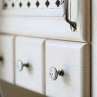
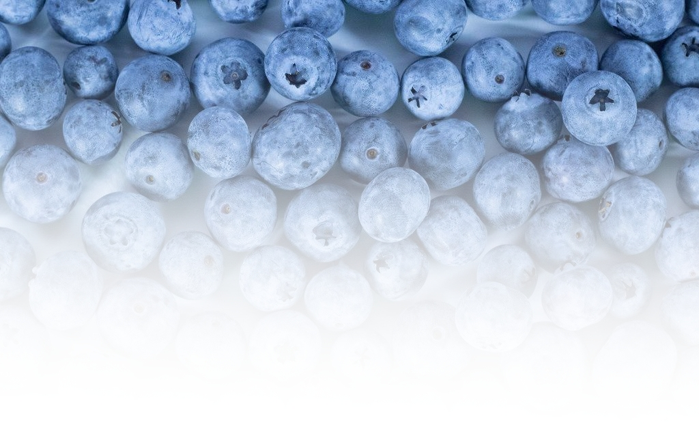
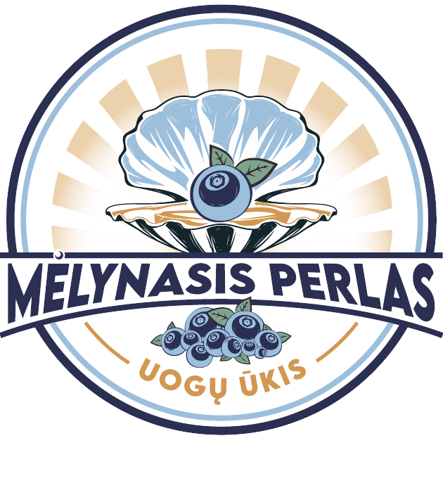
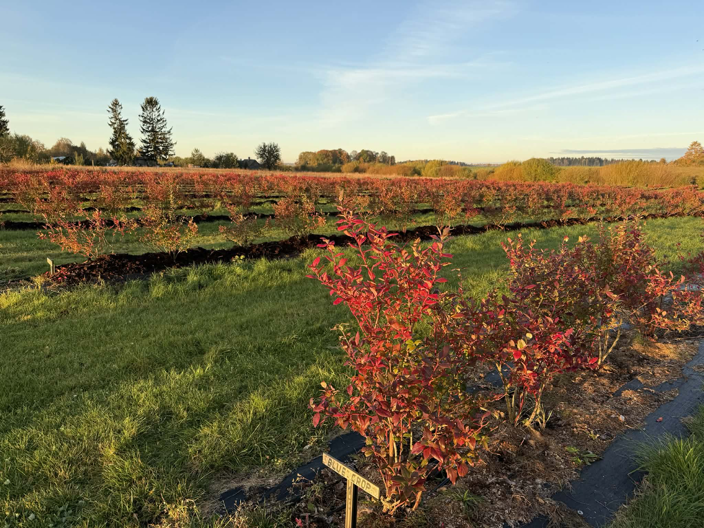
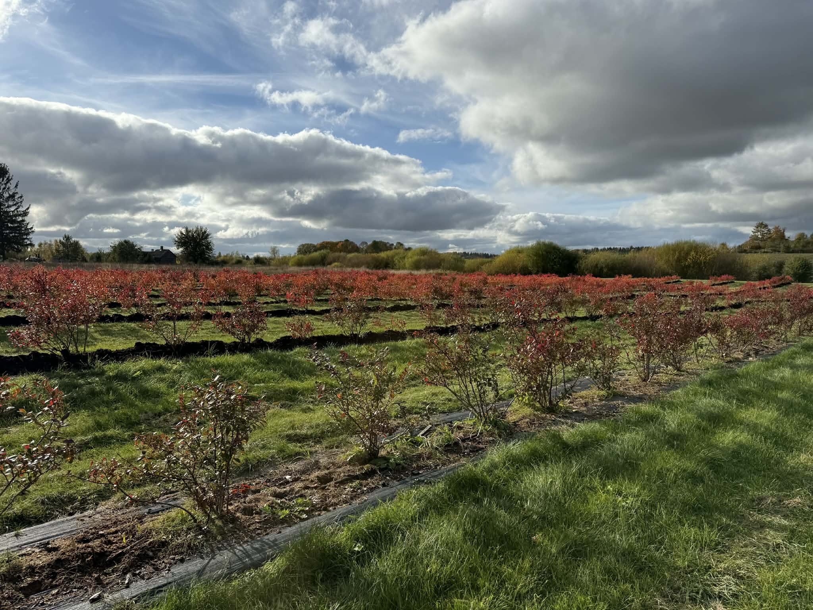
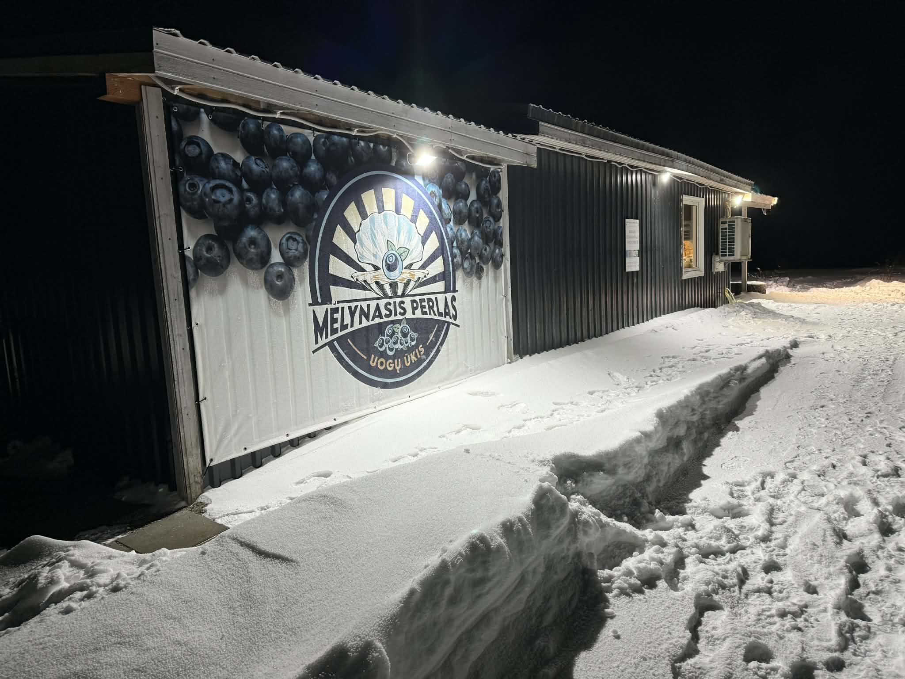

Medeinas baldai

Mūsų kitas verslas

ŠVIEŽIOS UOGOS IŠ ŪKIO JŪSŲ STALUI!


Mūsų kitas verslas

ŠVIEŽIOS UOGOS IŠ ŪKIO JŪSŲ STALUI!

Mėlynasis Perlas yra šeimos ūkis, įsikūręs Šiaulių raj. Toliočių kaime. 2017m pasodinome pirmuosius šilauogių krūmelius. O šiuo metu auginame 2h šilauogių, taip pat avietes ir smidrus. Ši gamtos oazė įsikūrusi tik 2km nuo Šiaulių, tad visus norinčius kviečiame sezono metu pasisiskinti uogų, pabūti gamtoje.
Galite įsigyti 6 veislių desertines šilauoges. Taip pat auginame remontantines avietes ir gegužės-birželio mėn. pjauname smidrų derlių


Kviečiame į savo komandą prisijungti šilauogių skynėjus